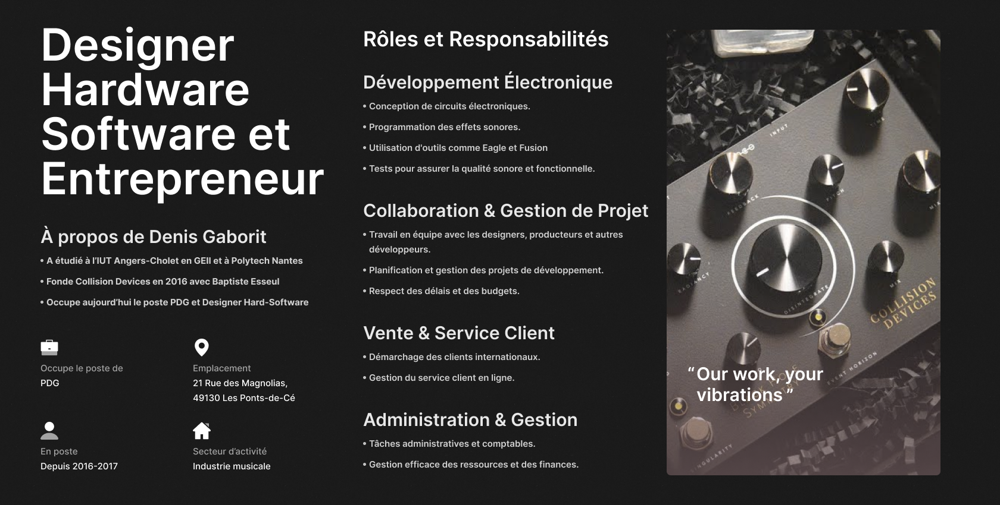

Comment le travail effectué en PPP m'a aidé dans ma reflexion personnel ?
Matéis RAGON
Le PPP et ces enseignements
Les visites d'entreprises
Lacroix electronics
Laita
La rencontre avec les alumnis
L'interview avec Denis Gaborit

Mes décisions futures
Enseignement
Enseignement
Lycée
Université
Armée de terre
Entreprenariat
Entreprenariat
Monter une société d'électronique et/ou d'informatique
Conclusion